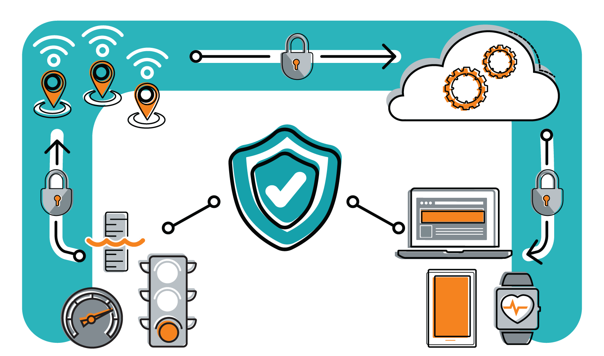

Projetos de Extensão 2022
Projetos de Extensão 2022Tecnologia da Informação
#acampamento_Python
Introdução: por que Python? Comandos e expressões. Tipos básicos de dados em Python. Variáveis. Entrada e saída de dados. Estruturas de decisão e controle. Estruturas de repetição.
 Saiba mais
Saiba mais
IoT para iniciantes na prática com micro: bit e arduino
Internet das Coisas (IoT) não é o futuro, é o presente! Torna-se cada vez mais comum entrarmos em algum ambiente que possui algum dispositivo inteligente, como uma iluminação que pode ser acionada remotamente por meio da Internet, uma câmera de segurança que armazena suas imagens na nuvem ou uma cortina que se fecha sozinha ao pôr do sol.
 Saiba mais